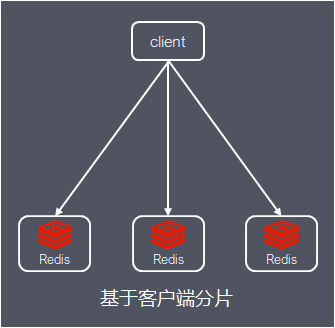
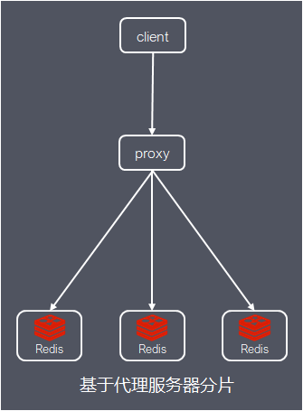
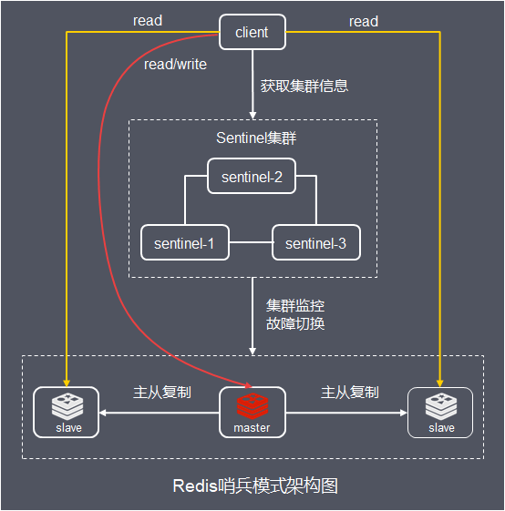
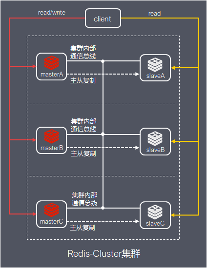
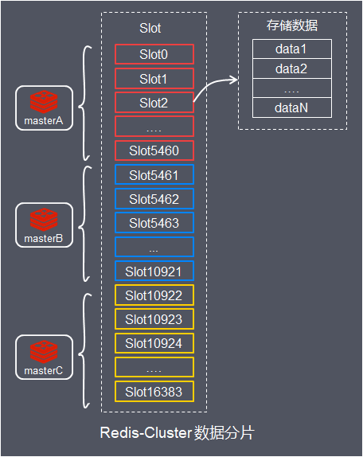
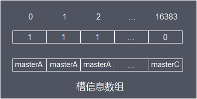
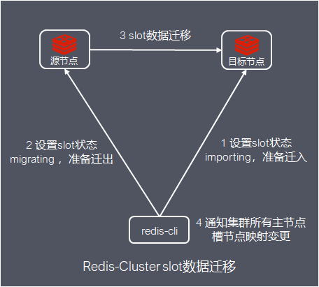
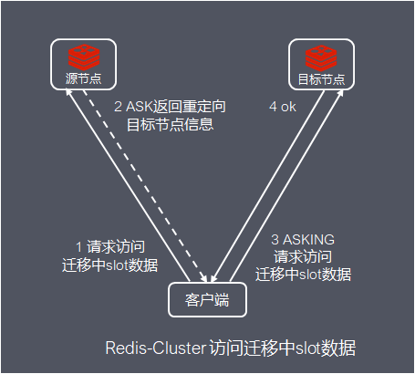
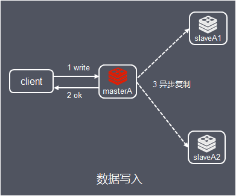

Redis作为一款性能优异的内存数据库，支撑着微博亿级社交平台，也成为很多互联网公司的标配。这里将以Redis Cluster集群为核心，基于最新的Redis5版本，从原理再到实战，玩转Redis集群
在介绍Redis Cluster集群方案之前，为了方便对比，先简单了解一下业界常见的Redis集群方案：

Redis Sharding是Redis Cluster出来之前，业界普遍使用的多Redis实例集群方法。其主要思想是基于哈希算法，根据Redis数据的key的哈希值对数据进行分片，将数据映射到各自节点上
优点在于实现简单，缺点在于当Redis集群调整，每个客户端都需要更新调整

客户端发送请求到独立部署代理组件，代理组件解析客户端的数据，并将请求转发至正确的节点，最后将结果回复给客户端
优点在于透明接入，容易集群扩展，缺点在于多了一层代理转发，性能有所损耗

Redis Sentinel是官方从Redis 2.6版本提供的高可用方案，在Redis主从复制集群的基础上，增加Sentinel集群监控整个Redis集群。当Redis集群master节点发生故障时，Sentinel进行故障切换，选举出新的master，同时Sentinel本身支持高可用集群部署
优点在于支持集群高可用，高性能读写，缺点在于没有实现数据分片，每个节点需要承载完整数据集，负载能力受当个Redis服务器限制，仅支持通过增加机器内存实现垂直扩容，不支持水平扩展
Redis Cluster 是 在 3.0 版本正式推出的高可用集群方案，相比Redis Sentinel，Redis Cluster方案不需要额外部署Sentinel集群，而是通过集群内部通信实现集群监控，故障时主从切换；同时，支持内部基于哈希实现数据分片，支持动态水平扩容
整体架构如下：

集群中有多个主节点，每个主节点有多个从节点，主从节点间数据一致，最少需要3个主节点，每个主节点最少需要1个从节点
将整个数据集按照一定规则分配到多个节点上，称为数据分片，Redis Cluster采用的分片方案是哈希分片

基本原理如下：
Redis Cluster首先定义了编号0 ~ 16383的区间，称为槽，所有的键根据哈希函数映射到0 ~ 16383整数槽内，计算公式：slot=CRC16（key）&16383。每一个节点负责维护一部分槽以及槽所映射的键值数据
槽是 Redis 集群管理数据的基本单位，集群扩容收缩就是槽和数据在节点之间的移动
槽与节点映射关系如下：

Redis Cluster支持不影响集群对外服务的情况下，对集群进行动态扩容或缩容，当Redis 新节点加入现有集群后，需要为其迁移槽和数据，确保迁移后每个节点负责相似数量的槽，使数据分布均匀在各节点上
整个数据迁移涉及系列操作，Redis提供了集群管理工具，包括基于Ruby的redis-trib.rb，还Redis5新提供的基于C语言redis-cli，下面的介绍以redis-cli为例
源节点将指定slot数据迁移到目标节点，基本流程如下：

通常情况下，如果客户端请求的数据不在节点上，节点会回复 MOVED 重定向信息，客户端根据该信息再请求正确的节点。对于正在迁移的slot数据，保证客户端仍然能正常访问的设计如下：

ASK 和 MOVED 这2个重定向控制有如下区别：
CAP包括：一致性（Consistency）、可用性（Availability）、分区容错性（Partition tolerance），系统如果不能在时限内达成数据一致性，就意味着发生了分区的情况，必须在C和A之间做出选择
Redis Cluster选择了AP架构，为了保证可用性，Redis并不保证强一致性，在特定条件下会出现数据不一致甚至丢失写操作

第一个原因是：为了在性能和一致性上做出权衡，主从节点间数据同步是异步复制的，当客户端成功写入master节点，master返回成功，master节点才将写操作异步复制给slave节点
另外一个原因是，当集群发送网络分区，集群可能会分为两部分：多数派和少数派，假如masterA节点位于少数派，如果网络分区发生时间较短，那么集群将会继续正常运作；如果分区的时间足够长，让多数派中选举为新的master替代matsterA，那么分区期间写入masterA的数据就丢失了
在网络分区期间， 客户端可以向matsterA发送写命令的最大时间是有限制的， 这一时间限制称为节点超时时间（cluster-node-timeout），是 Redis集群的一个重要的配置选项
至此，Redis Cluster集群原理介绍到这里，其实还有集群通信协议，内存，数据备份，主从复制等特性值得学习，是设计分布式系统的典范，有机会再展开介绍
下一篇，介绍Redis Cluster的集群实战
微博6年redis实践
https://mp.weixin.qq.com/s/dBWIHwfmrs6Tt7INw-zSyA
Redis 官网介绍cluster设计说明
https://redis.io/topics/cluster-tutorial
https://redis.io/topics/cluster-spec